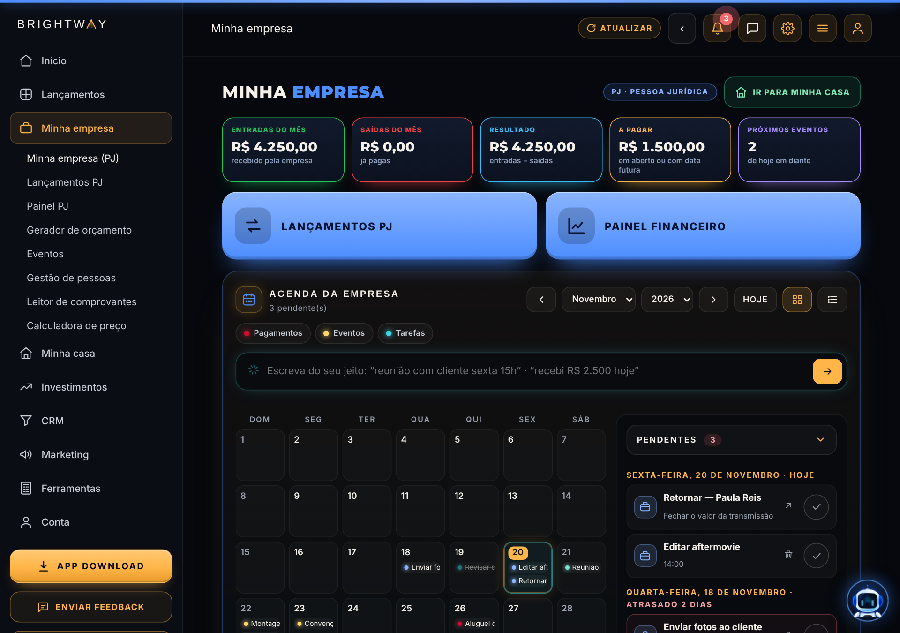

O ecossistema da pessoa jurídica, em azul. Abre pelo Início (tela MEU NEGÓCIO) ou pelo menu.

GESTÃO DA EMPRESA: orçamentos, eventos (e clientes), gestão de pessoas, leitor de comprovantes e calculadora de preço. CRM · CLIENTES: funil, indicadores e link de pedir orçamento. MARKETING e FERRAMENTAS DA EMPRESA completam a página.
O botão IR PARA MINHA CASA, no alto, troca de ambiente.
Pessoas ficam na Gestão de pessoas, eventos e clientes em Eventos e todo o dinheiro da empresa nos Lançamentos PJ. Um evento existe uma vez só: o que você muda nele aparece na equipe, na agenda e no Painel.